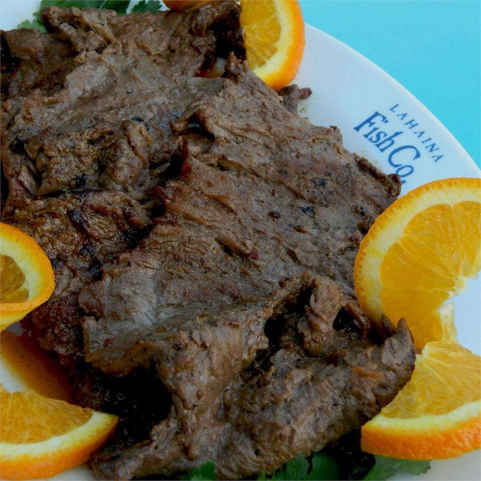

Grilled Blood Orange Chuck Steak

Description
I've been experimenting with marinades for years. This recipe is the result of the combined efforts of several friends and a few cookbook recipes.
Ingredients
- ½ cup blood orange marmalade
- ¼ cup water
- ¼ cup soy sauce
- ¼ cup prepared mojo criollo dressing
- 2 tablespoons brown sugar
- 2 tablespoons orange juice
- 1 teaspoon ground ginger
- ¼ teaspoon garlic powder
- 1 ½ teaspoons grated orange zest
- 2 pounds beef chuck steak
Steps
- Mix marmalade, water, soy sauce, mojo criollo dressing, brown sugar, orange juice, ginger, garlic powder, and orange zest in a bowl. Measure 1 cup marinade and pour into a large resealable plastic bag; add beef to bag. Seal bag and turn beef inside bag to coat completely. Marinate in refrigerator, turning occasionally, for at least 8 hours to overnight. Cover bowl with remaining marinade and refrigerate.
- Remove beef from marinade; discard used marinade.
- Preheat grill for medium heat and lightly oil the grate.
- Grill beef on the preheated grill, basting frequently with reserved marinade, until desired doneness is reached, 5 to 10 minutes per side. An instant-read thermometer inserted into the center should read 140 degrees F (60 degrees C).